품질경영산업기사 (2017-03-05 기출문제)
1과목: 실험계획법
1. 실험결과의 해석 시 결측치가 생겼을 때 처리하는 내용으로 틀린 것은?
- 1요인실험에서는 그대로 계산한다.
- 가능하면 1회 더 시실험하여 결측치를 메꾼다.
- 반복이 있는 2요인실험이면 그대로 계산한다.
- 반복이 없는 2요인실험이면 Yates의 방법으로 추정한다.
(정답률: 56%)

2. ℓ=4, m=3이고, 모수요인 1요인실험에서 분산분석 결과 총 제곱합(ST)는 2.383, 요인 A의 제곱합 (SA)는 2.011이었다. 오차의 분산 (
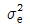
)을 신뢰수준 95%로 신뢰구간을 추정한 값은 약 얼마인가? (단,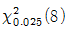
=2.18,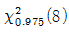
=17.53이다.)- 0.136≤
 ≤1.0930
≤1.0930 - 0.0145≤
 ≤0.0924
≤0.0924 - 0.0212≤
 ≤0.1706
≤0.1706 - 0.1150≤
 ≤0.9920
≤0.9920
(정답률: 60%)
3. 어떤 화학 공장에서 제품의 수율에 영향을 미칠 것으로 생각되는 반응온도(A)와 원료(B)를 인자로 반복이 없는 2요인실험을 하여 다음과 같은 분산분석표를 얻었다. 판단이 맞는 것은? (단, F0.99(3,6)=9.78, F0.99(2,6)=10.9이다.)
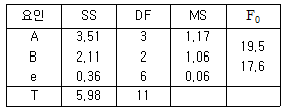
- 요인 A만 유의수준 1%에서 유의하다.
- 요인 B만 유의수준 1%에서 유의하다.
- 요인 A,B 모두 유의수준 1%에서 유의하다.
- 요인 A,B모두 유의수준 1%에서 유의하지 않다.
(정답률: 60%)
4. 다음은 반복이 없는 2요인 모수모형 실험의 분산분석표이다. 오차항의 자유도는?
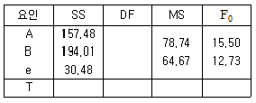
- 6
- 8
- 9
- 12
(정답률: 66%)
5. 요인 A를 실험일로 하여 동일횟수 반복 실험을 실시한 후 다음의 분산분석표를 얻었다. 실험일 간의 산포 크기를 나타내는 변량요인 A의 분산(
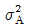
)의 추정치는?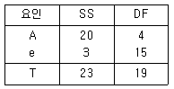
- 0.20
- 0.96
- 1.00
- 1.20
(정답률: 52%)
6. 2수준계 직교배열표의 특징으로 틀린 것은?
- 각 열의 자유도는 2이다.
- 2인자 교호작용도 배치할 수 있다.
- 실험횟수를 변화시키지 않고도 많은 요인을 배치할 수 있다.
- 기계적인 조작으로 이론을 잘 모르고도 일부실시법, 분할법, 교락법 등의 배치를 쉽게 할 수 있다.
(정답률: 59%)
7. L8(27)직교배열표에서 교호작용을 무시하고 A,B,C,D,E의 5개 요인을 차례로 각 열에 배치한 후 8회의 실험을 한 결과, C를 배치한 3열의 수준 2의 데이터 합이 60, 수준 1의 데이터 합이 46이라면 C요인의 제곱합(SC)은 얼마인가?
- 14.0
- 24.5
- 49.0
- 60.5
(정답률: 58%)
8. 반복이 없는 두 모수요인(A,B)으로 실험한 결과 A,B가 모두 유의하였다. 최적조건이 A1B2일 때 모평균의 추정식은?
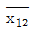
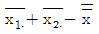
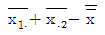
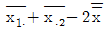
(정답률: 73%)
9. 다음 두 데이터의 공분산(covariance)은?
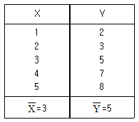
- 3
- 4
- 5
- 6
(정답률: 53%)
10. 표는 중간제품의 제조에 있어서 중화법(A) 4수준과 첨가량(B) 3수준으로 반복 2회 랜덤하게 실험(모수모형)하여 분산 분석한 데이터이다. 교호작용이 유의하지 않았다면 풀링(pooling)후 오차의 자유도는?
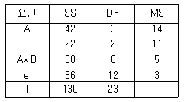
- 6
- 9
- 12
- 18
(정답률: 49%)
11. 단순임의배열에 의해 설계된 요인 A의 3수준에서 각각 6번의 특성치를 얻었다. 각 수준의 온도간에 차이가 있는지를 알아보기 위해 분산분석을 실시하였다. 이 때, 요인 A의 기대평균제곱 (E(VA))은?
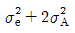
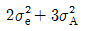
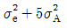
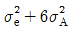
(정답률: 79%)
12. 반복이 없는 2 요인실험에서 요인 A의 제곱합(SA)이 1.03, 요인 A의 순 제곱합(SA′)이 0.775일 때, 자유도 (vA)는 얼마인가? (단, Ve=0.085이다.)
- 2
- 3
- 4
- 5
(정답률: 62%)
13. 3×3라틴방격벙 실험에서 분산분석 결과 A,B 두 요인만 유의하였다. 두 요인의 수준조합에서 모 평균을 추정하고자할 때 유효반복수는 (ne)는 얼마인가?
- 1.5
- 1.8
- 2.3
- 2.8
(정답률: 60%)
14. 반복이 일정하지 않은 1요인실험에서 분산분석 후 추정에 관한 내용으로 틀린 것은? (단, A의 수준수는 ℓ, 수준에는 mi개의 데이터가 있다.)
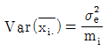
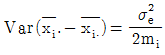
- F검정의 귀무가설은
 이다.
이다. - 유의수준 5%일 때 기각역은
 이다.
이다.
(정답률: 50%)
15. 부적합품 여부의 실험에서 적합품이면 0, 부적합품이면 1의 값을 주기로 하고 4대의 기계에서 나오는 200개씩의 제품을 만들어 부적합품 여부를 조사한 결과가 다음 표와 같을 때, 총 제곱합(ST)은?
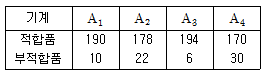
- 52.31
- 56.44
- 60.29
- 62.22
(정답률: 60%)
16. 4×4 라틴방격법에서 오차제곱합의 자유도(ve)는?
- 3
- 6
- 9
- 12
(정답률: 48%)
17. 실험계획법의 원리를 설명한 것으로 틀린 것은?
- 실험의 반복을 통해 오차분산의 크기를 증가시켜 검출력을 높일 수 있다.
- 요인간의 직교성이 성립되게 하여 독립성을 확보함으로써 적은 실험횟수로 검출력을 높이고 정도가 높은 추정을 할수 있다.
- 블록을 형성할 경우 실험을 시간적, 공잔적으로 분할하여 실험환경을 균일하게 함으로써 정도가 좋은 결과를 얻을 수 있다.
- 랜덤화를 실시함으로써 실험에 포함되지 않는 다른 요인이 미치는 영향을 실험전체에 분산시킴으로써 실험이 편중되게미치는 영향을 줄일 수 있다.
(정답률: 66%)
18. 모수요인 A를 3수준, 블록요인 B를 5수준으로 택하여 난괴법 실험을 하였을 경우 오차항의 자유도(ve)는?
- 8
- 9
- 10
- 12
(정답률: 61%)
19. 반복이 있는 2요인실험에서 자유도는 vA=3, vB=2, vA×B=6, ve=12이다. 이 실험의 반복수 r은?
- 2
- 3
- 4
- 5
(정답률: 46%)
20. 난괴법 실험계획에 대한 설명 중 맞는 것은?
- 교호작용 효과를 구할 수 있다.
- 변량인자의 산포의 추정은 전혀 의미가 없다.
- 변량인자의 모평균 추정은 전혀 의미가 없다.
- 1요인 반복실험을 완전 랜덤으로 실험하는 방법이다.
(정답률: 72%)
2과목: 통계적품질관리
21. A생산라인 제품 800개, B생산라인 제품 640개, C생산라인 제품 160개로이루어진 로트가 있다. 층별비례샘플링으로 시료 150개를 샘플링 할 경우 A생산라인에서는 몇 개를 채취하게 되는가?
- 25개
- 50개
- 75개
- 150개
(정답률: 63%)
22. 부분군의 크기(n)를 5로 하여 작성한
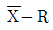
관리도에서 R관리도가 안정상태에 있고,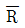
가 3.18이었다. 관리도를 작성한 전체 데이터로 히스토그램을 작성하여 계산한 표준편차(σH)가 19.5이라면, 군간 변동 σb의 값은 약 얼마인가? (단, n=5일 때, d2=2.326이다.)(오류 신고가 접수된 문제입니다. 반드시 정답과 해설을 확인하시기 바랍니다.)- 13.9
- 16.6
- 18.5
- 19.2
(정답률: 35%)
23. 확률변수 X가 N(μ,σ2)인 정규분포를 따를 때, Y=aX+b인 의 기대치 E(Y) 및 분산 V(Y)로 맞는 것은?
- E(Y)=aμ, V(Y)=A2σ2
- E(Y)=aμ, V(Y)=A2σ2
- E(Y)=aμ+b, V(Y)=A2σ2
- E(Y)=aμ+b, V(Y)=A2σ2+b
(정답률: 75%)
24. 관리도에 관한 설명으로 틀린 것은?
- 슈하트 관리도에서 ±3σ관리한계를 벗어나는 제품은 부적합품 임을 의미한다.
- 슈하트 관리도의 ±3σ관리한계 안에서 변동이 생기는 원인은 우연원인이다.
- 슈하트의
 관리도는 공정의 평균과 산포의 변화를 동시에 볼 수 있는 특징이 있다.
관리도는 공정의 평균과 산포의 변화를 동시에 볼 수 있는 특징이 있다. - 관리도는 공정이 이상징후를 보일 때, 이를 신속히 발견하여 조치를 취하는데 적절한 품질개선 도구이다.
(정답률: 31%)
25.
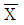
관리도의 계수 중 A2가 의미하는 것은?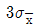
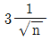
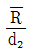
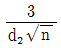
(정답률: 70%)
26. 어느 공정의 모분산 σ2은 2kg으로 알려져 있다. 공정에 새로운 공법을 적용하면 산포가 줄어드는지를 검정하기 위하여 10개를 만들어 제곱합(S)을 계산하였더니 22kg로 나타났다. 검정통계량을 구하면 약 얼마인가?
- 2.2
- 2.4
- 4.4
- 11
(정답률: 49%)
27. p관리도와 np관리도에 대한 설명으로 틀린 것은?
- 모두 부적합품과 관련된 관리도이다.
- 모두 이항분포를 응용한 계량형 관리도이다.
- 부분군의 시료크기와 일정할 때만 np관리도를 사용한다.
- 부분군의 시료크기가 달라지면 p관리도의 관리한계도 달라진다.
(정답률: 63%)
28. OC 곡선이 차이가 없는 1회, 2회, 다회,축차 샘플링 검사에서 평균 샘플크기(ASS)가 가장 작은 샘플링 형식은?
- 축차 샘플링
- 1회 샘플링
- 다회 샘플링
- 2회 샘플링
(정답률: 69%)
29. 수치변환 Xi=(xi-x0)×h을 행하여 다음의 데이터를 얻었다. 이 100개의 데이터의 시료 표준편차는?
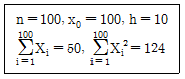
- 0.01
- 0.⑤
- 0.1
- 0.5
(정답률: 44%)
30. 특성치가 낮을수록 좋은 경우 로트의 평균치를 보증하는 계량 규준형 1회 샘플링 검사 방식에서 m0=10Ω 이고,n=9, kα=1.645, kβ=1.282, σ=1.5Ω이고 평균치의 상한 합격 판정치 (
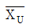
)는 약 얼마인가?- 9.178Ω
- 10.274Ω
- 9.726Ω
- 10.823Ω
(정답률: 47%)
31. 바둑돌 흰 것을 5개, 검은 것을 3개 넣어 두고 잘 섞어서 1개를 뽑아내어 그 빛깔을 본 후 다시 넣고 또 다시 잘 섞어서 1개를 뽑아내어 그 빛깔을 볼 때, 2번 모두 검은 돌을 뽑을 확률은 얼마인가?
- 6/64
- 9/64
- 20/21
- 63/64
(정답률: 73%)
32. 적합된 회귀선의 기여율이 의미하는 용어는?
- 상관계수
- 결정계수
- 총제곱합
- 오차제곱합
(정답률: 62%)
33. 양측 신뢰구간 추정 시 모부적합수(m)에 대한 신뢰구간의 신뢰상한값에 관한 추정식으로 맞는 것은? (단, x는 부적합수이다.)
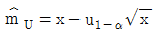
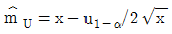
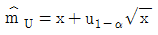
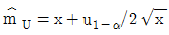
(정답률: 64%)
34.
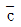
=16일 때, c관리도의 LCL은?- 4
- 6
- 12
- 28
(정답률: 60%)
35. 어떤 철판의 평균 부적합수 u=2인 제품에서 랜덤샘플링(Random Sampling)하였을 때, 부적합수가 0일 확률은 약 얼마인가?
- 0.113
- 0.135
- 0.270
- 0.4⑤
(정답률: 46%)
36. 일반적으로 샘플링검사보다 전수검사가 유리한 경우는?
- 검사항목이 많을 떄
- 인장강도 시험 등의 파괴검사일 때
- 검사비용에 비해서 제품이 확실히 고가 일 때
- 생산자에게 품질향상의 자극을 주고 싶을 때
(정답률: 57%)
37. 계수형 샘플링검사 절차-제1부 : 로트별 합격품질한계(AQL) 지표형 샘플링검사 방식(KS Q ISO 2859-1:2014)에서 샘플링 방식이 일정하지 않을 경우 합격판정 점수의 계산법에 대한 설명 중 틀린 것은?
- 만일 주어진 합격판정개수가 0이면, 합격판정점수는 바뀌지 않는다.
- 만일 주어진 합격판정개수가 1/5이면, 합격판정점수에 2점을 가산한다.
- 만일 주어진 합격판정개수가 1/4이면, 합격판정점수에 3점을 가산한다.
- 만일 주어진 합격판정개수가 1/2이면, 합격판정점수에 5점을 가산한다.
(정답률: 68%)
38. 개별치(X) 관리도에 대한 설명으로 맞는 것은?
- 부적합수의 관리를 위해 고안된 관리도이다.
 관리도에 비해 공정의 변화를 잘 탐지하는 성능이 좋은 관리도이다.
관리도에 비해 공정의 변화를 잘 탐지하는 성능이 좋은 관리도이다.- 하나의 제품을 생산하는데 많은 시간이 필요한 경우에 효율적이다.
- 계수형 관리도뿐 아니라 계량형 관리도에도 널리 활용되는 관리도이다.
(정답률: 48%)
39. 유의수준 α에 대한 설명으로 맞는 것은?
- 제2종 오류라고 한다.
- 나쁜 로트가 합격할 확률이다.
- 공정이 이상이 있는데 없다고 판정할 확률이다.
- 귀무가설이 옳은데도 불구하고 기각할 확률이다.
(정답률: 70%)
40. n=20,
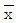
=0.36, 제곱합 S=0.⑤4인 모집단의 평균치 μ를 구간 추정하면 약 얼마인가? (단, 신뢰율은 95%이며, t0.975(19)=2.093이다.)- 0.291~0.335
- 0.335~0.385
- 0.353~0.38
- 0.385~0.395
(정답률: 58%)
3과목: 생산시스템
41. 5개의 작업장으로 이루어진 흐름라인의 사이클 타임은 1분, 요소작업들의 총 작업시간은 4.5분일 때 이 라인밸런스 효율은?
- 80%
- 85%
- 90%
- 95%
(정답률: 59%)
42. 제품 A,B,C,D의 재고와 수요 자료가 다음과 같다. 소진기간법을 이용하여 일정 계획을 수립할 떄 가장 먼저 생산해야 하는 제품은?
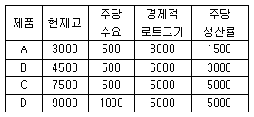
- A
- B
- C
- D
(정답률: 62%)
43. 동일제품을 반복하여 대량으로 생산하는 방식에 해당하는 것은?
- 주문생산
- 연속생산
- 개별생산
- 소로트 생산
(정답률: 84%)
44. 여유시간이 4분, 정미시간이 40분일 경우 외경법에 의한 여유율은 얼마인가?
- 7%
- 9%
- 10%
- 12%
(정답률: 69%)
45. JIT시스템의 7가지 낭비에 해당하지 않는 것은?
- 대기의 낭비
- 원재료의 낭비
- 운반의 낭비
- 과잉생산의 낭비
(정답률: 82%)
46. 연속생산 시스템의 특징이 아닌 것은?
- 일정한 생산속도로 적은 종류의 제품을 대량 생산하는 방식이다.
- 각 공정이 가공능력의 균형을 유지하고 있는 한 재공품 재고는 불필요하다.
- 연속생산은 기계공업적 연속생산과 장치산업적 연속생산으로 나눌 수 잇다.
- 한 공정의 고장이 생기더라도 전체공정이 정지되는 경우가 없으므로 생산공정의 신뢰성이 높다.
(정답률: 71%)
47. MRP 시스템에 의한 자재관리의 특징을 설명한 내용 중 틀린 것은?
- 주문시기 산출
- 주문수량 산출
- 주문의 독촉과 연기
- 생산통제와 재고관리의 분리
(정답률: 51%)
48. 공구 및 설비의 설계에 관한 동작경제의 원칙 중 틀린 것은?
- 공구류 및 재료는 다음에 사용하기 쉽도록 놓아준다.
- 공구류는 한 가지 기능만을 할 수 있는 전용공구를 사용한다.
- 각 손가락이 서로 다른 작업을 할 때는 각 손가락의 능력에 맞게 작업량을 분배한다.
- 레버, 핸들 및 제어장치는 작업자가 몸의 자세를 크게 바꾸지 않아도 조작이 쉽도록 배열한다.
(정답률: 80%)
49. 품목 A의 연간사용량은 5200개이고, 조달기간은 2주일 때 A의 재주문점은 얼마인가? (단, 1년은 52주이고, 안전재고는 0으로 한다.)
- 50개
- 100개
- 200개
- 300개
(정답률: 55%)
50. 생산팀에 작업명령을 내릴 때 사용되는 것으로 생산품목, 생산수량, 생산시간 등이 포함된 시트는?
- 품질계획서
- 체크리스트
- 원래배합표
- 작업지시서
(정답률: 74%)
51. 운용중인 설비의 종합적인 효율을 향상시키기 위한 접근방법으로 틀린 것은?
- 6대 로스 발생의 정략적 파악 및 평가
- 적합품률을 향상시키기 위한 접근방안 연구
- 최첨단, 고성능 설비로 대체하기 위한 장기적인 방안 연구
- 시간가동율과 성능가동율을 향상시키기위해 문제를 인식하고 그의 해결방안 연구
(정답률: 77%)
52. 90% 학습곡선을 적용할 수 있는 기계가공 제품회사에서 200개의 제품을 생산하고자 한다. 최초의 제품을 생산하는 데 10시간이 소요된다면 200번째 제품의 생산소요시간은 약 얼마인가?
- 4.5시간
- 6.2시간
- 9.4시간
- 10.5시간
(정답률: 38%)
53. TP는 프로젝트의 목표예정일 TE는 최종단계의 실제달성일,
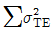
는 주공정(CP)활동들의 분산의 합계이다. 프로젝트를 납기내에 완료할 수 있는 확률을 계산하기 위한 표준정규분포 확률변수를 맞게 표시한 것은?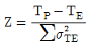
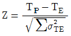
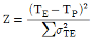
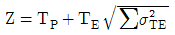
(정답률: 54%)
54. MTM(method time measurement)법의 장점이 아닌 것은?
- 방법이 단순하여 누구나 쉽게 적용할 수있다.
- 생산 개시 전에 보다 나은 작업방법을 설정할 수 있다.
- 작업대 배치도와 작업방법만 알면 시간을 산출할 수 있다.
- 수행도의 평가가 불필요하므로 객관적인 평가를 할 수 있다.
(정답률: 47%)
55. GNP, 세대수 등 제품의 수요에 영향을 미치는 요인과 수요 사이의 관계를 통계적으로 분석하여 수요를 예측하는 기법은?
- 시장조사법
- 지수평활법
- 이동평균법
- 회귀분석법
(정답률: 42%)
56. 생산일정계획의 목적으로 틀린 것은?
- 작업흐름의 신속화
- 생산활동의 동기화
- 생산리드타임의 증대
- 작업의 안정화와 가동률 향상
(정답률: 84%)
57. 다음과 같은 제품을 생산하는 시스템으로 가장 적합한 것은?
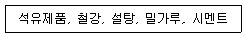
- 연속생산
- 프로젝트 생산
- 뱃치(batch) 생산
- 잡샵(job shop)생산
(정답률: 80%)
58. 기계의 가동, 비가동률을 워크샘플링법으로 추정하는 경우, 가동중인 것으로 관측되는 횟수를 나타내는 확률변수는 어떤 분포를 따르는가?
- t분포
- 이항분포
- X2분포
- 푸아송분포
(정답률: 54%)
59. 작업자의 담당기계 대수를 결정하기 위한 분석표는?
- 동작분석표
- 공정분석표
- 부문상호관계표
- 사람-복수기계분석표
(정답률: 84%)
60. 경제적 주문량(EOQ)모형의 가정에 해당되지 않는 것은?
- 재고부족을 허용한다.
- 단일품목만을 고려한다.
- 조달기간은 일정하다고 알려져 있다.
- 1회 주문비용은 주문량에 관계없이 일정하다.
(정답률: 65%)
4과목: 품질경영
61. 일종의 품질 모티베이션 활동인 ZD운동, QC 서클 활동의 특징에 해당되지 않은 것은?
- 자주관리
- 타율적 운영
- 주로 대면접촉
- 소집단 활동
(정답률: 74%)
62. “설정한 목표를 달성하기 위해서 목적과 수단의 계열을 계통적으로 전개함으로써 최적의 수단을 탐구하는 방법이다. ”이러한 활동에 주로 사용되는 신 QC기법은?
- 연관도
- 친화도
- 계통도
- 애로우다이어그램
(정답률: 84%)
63. 품질코스트 중 실패코스트(F Cost)에 해당하는 것은?
- 시장조사비용
- 무상서비스비용
- 수입검사비용
- 계측기교정비용
(정답률: 80%)
64. 공정능력에 관한 설명 중 공정의 자연공차가 규격의 최대(상한)값과 최소(하한)값 간의 차와 같을 때의 설명으로 맞는 것은?
- Cp ≤ 0.67
- 1.67 ＞ Cp ≥ 1.33
- Cp ≒ 1
- 1.33 ＞ Cp ≥ 1.67
(정답률: 75%)
65. PL(제조물 책임)법에서 가장 중요시 하는 것은?
- 외관
- 성능
- 안전성
- 신뢰성
(정답률: 78%)
66. 체계적인 품질보증활동을 수행하기 위해 각 부서별로 해야 할 일을 설명한 것으로 틀린 것은?
- 생산기술부서는 초기제품을 생산하고, 초기제품 평가회를 하고 신뢰성, 성능등을 확인한다.
- 기획 및 개발부서에서는 경영층의 방침에 맞추어 시장조사, 정보분석, 제품 기획, 품질설계, 시제품 생산 및 평가를 한다.
- 생산부서에서는 개발제품의 판매전략 수립, 제조품질달성 및 시생산을 수행하고, 이 시기에 품질보증을 위한 전체적인 체계도를 완성한다.
- 판매 및 서비스 부서에서는 판매준비를 철저하게 하고, 소비자에 대한 품질보증방법 및 홍보, 클레임 재발 방지를 위한철저한 원인분석과 중요품질문제를 파악한다.
(정답률: 66%)
67. A.R.Tenner는 고객이 기대하는 제품과 품질특성을 3단계 계층 구조로 나누고 있다. 가장 낮은 단계인 밑바닥 층의 묵시적 요구인 기층 기대에 해당하는 사항은?
- 승용차의 브레이크의 안전성
- 승용차 뒷자석의 전용 냉장고
- 자동기어 및 가죽시트의 옵션
- 후방카메라 설치 무상 서비스
(정답률: 79%)
68. 단체규격에 해당하는 것끼리 묶은 것은?
- ANSI, DIN
- ASTM, JIS
- ASME, IEC
- ASME, ASTM
(정답률: 73%)
69. 제품이나 서비스가 규정된 요구사항을 만족시키고 있는가의 여부를 평가하는 특성 및 성능을 포함하는 용어는?
- 방법
- 품질
- 형식
- 등급
(정답률: 79%)
70. 기준치수로 되어 있는 표준편차 제품을 측정기기로 비교하여 지침이 지시하는 눈금의 차를 읽는 측정방법은?
- 비교측정
- 직접측정
- 절대측정
- 간접측정
(정답률: 72%)
71. 표준의 서식 및 작성방법(KS A 0001:2015)에서 규정하고 있는 규격서의 서식에서 문장 끝에 사용되는 용어가 맞는 것은?
- 권고사항 : ~할 수 잇다.
- 허용 : ~하는 것이 좋다.
- 요구사항 : ~하여야 한다.
- 실현성 및 가능성 : ~해도 된다.
(정답률: 79%)
72. 제조단계에서의 품질보증 활동에서 가장 기본적으로 중시해야 할 사항은?
- 공정능력 확보
- 내부심사 실시
- 설계심사 실시
- 품질검사 시행
(정답률: 67%)
73. 어느 자동차 부품 생산업체에서 한 가지 부품을 대량으로 생산하고 있다. 그 부품의 주요 품질특성은 부피(치수)인데 규격한계는 상한규격(U)=103.5, 하한규격(L)=94.5이고 1주일간 관리상태에서 측정한 200개의 데이터로부터 표준편차(s)=0.98을 얻었다. 치우침도(k)=0.178인 로트의 경우 최소공정능력지수(Cpk)는 약 얼마인가?
- 1.26
- 1.53
- 2.52
- 3.06
(정답률: 31%)
74. 어느 기계부품을 랜덤하게 취하여 도수표에 정리한 결과, x0=72.5, h=0.2, ∑fi=150, ∑fiui=77, ∑fiui2=765를 얻었다. 기계부품의 평균값은 약 얼마인가?
- 71.520
- 71.7⑤
- 72.603
- 72.7⑤
(정답률: 45%)
75. 품질경영시스템-기본사항과 용어(KS QISO 9000:2015) 결과 관련 용어(3.7)에서 제품 (3.7.6)에 포함되지 않는 용어는?
- 서비스(service)
- 하드웨어(hardware)
- 소프트웨어(software)
- 반제품(inprocess product)
(정답률: 76%)
76. 사내표준화 작업 시의 기본원칙에 대한 내용으로 틀린 것은?
- 사내표준을 성문화하여야 한다.
- 경영자의 솔선수범이 있어야 한다.
- 전사적인 이해, 실행 및 유지할 수 있어야 한다.
- 향후 예상되는 작업세목에 대해 규정하여야 한다.
(정답률: 74%)
77. 6Sigma 수준에 해당하는 설명 중 틀린 것은?
- Cp는 2이다.
- Cpk는 1이다.
- 망목특성에서 공차의 크기가 모표준편차의 12배가 되는 경우이다.
- 평균치가 규격의 중심에서 1.5 치우치는 경우 부적합품률은 3.4ppm이다.
(정답률: 52%)
78. 개선활동 시 사용하는 아이디어 발상법 중 고든(W. Gordon)법에 대한 설명 내용으로 가장 거리가 먼 것은?
- 고든에 의해 개발되었다.
- 리더가 그 분야에 전문가이어야 한다.
- 물건의 공통된 특성, 즉 추상화하여 테마를 결정한다.
- 일반적으로 브레인스토밍법에 비하여 시간이 짧게 걸린다.
(정답률: 69%)
79. 부품의 끼워맞춤에 관한 3가지 기본 형태에 속하지 않는 것은?
- 억지 끼워맞춤
- 겹침 끼워맞춤
- 중간 끼워맞춤
- 헐거운 끼워맞춤
(정답률: 72%)
80. 업무를 수행하면서 발생하는 모든 문서, 자료, 전표, 도면 기록 등을 필요에 따라 즉시 이용할 수 있도록 그 발생에서부터 조직적이고 체계적으로 분류, 정리한 후 보관 및 보존의 단계를 거쳐 폐기시키는 일련의 관리시스템을 무엇이라 하는가?
- 파일링 시스템
- 모니터링 시스템
- 기록관리 시스템
- 품질평가 시스템
(정답률: 72%)